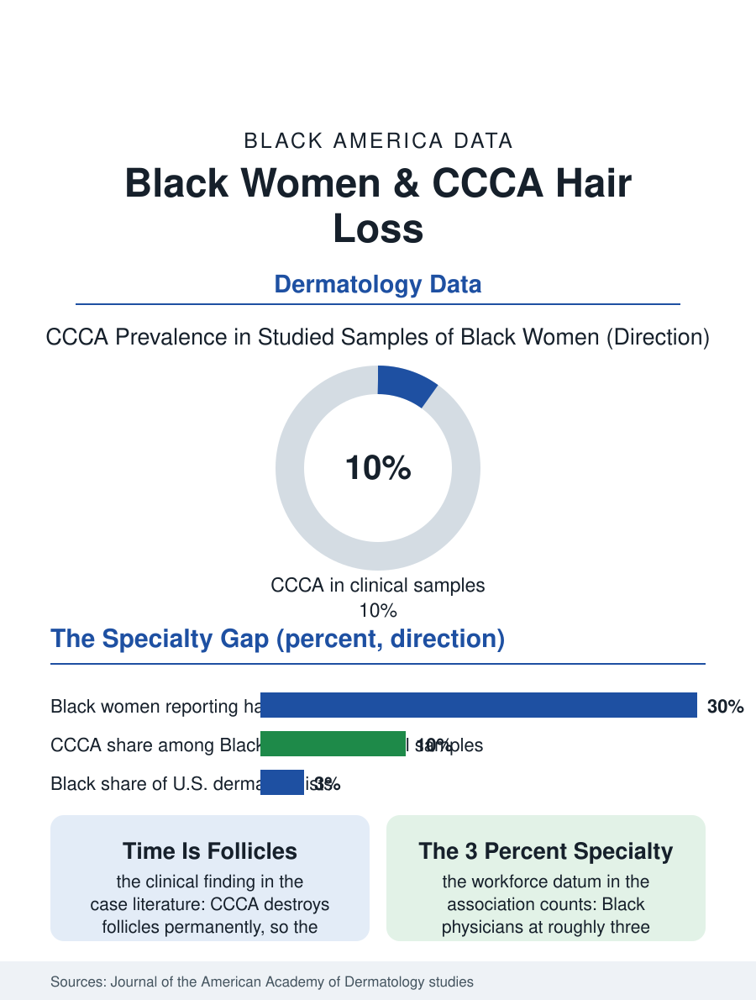

Black Public Health
The Crown File: Black Women and Scarring Hair Loss
The most common scarring hair loss in Black women was studied late, is diagnosed later, and destroys follicles while it waits. The alopecia file.

Central centrifugal cicatricial alopecia has a name most Americans have never heard and a patient population that is overwhelmingly Black women. CCCA is a scarring hair loss that begins at the crown and spreads outward, destroying follicles permanently where it advances, and dermatology studies estimate it affects a meaningful share of Black women, making it one of the most common causes of hair loss in the group the specialty serves least. This article reads the alopecia file.
A Disease the Specialty Met Late
The clinical literature dates serious attention to CCCA only to recent decades, a lag the file records without surprise: dermatology's training images, textbooks, and research cohorts historically underrepresented Black skin and hair, so a condition centered on Black women's scalps waited for Black dermatologists and their patients to force it into the research agenda. The studies that now exist find prevalence estimates ranging widely, from a few percent to figures in the teens among Black women surveyed in clinical and community samples, with family history appearing often enough in the case series to suggest a genetic thread woven together with styling practices, inflammation, and metabolic conditions that travel with it. The association data link CCCA to type 2 diabetes and other conditions at rates that have pushed current guidance toward treating the scalp finding as a prompt for wider screening, a small example of what changes when a condition is studied in the population that actually has it. Diagnosis itself lags: the early symptom, tenderness, itching, and breakage at the crown, is easily and often misread as a styling problem, by stylists, by primary care, and by patients taught to endure it, so the average case in the treatment literature has been progressing for years before a biopsy names it.
Hair, Practice, and the Culture in the Chart
No file in this atlas sits closer to culture than this one. The research on styling and CCCA is genuinely unsettled: studies have examined relaxers, hot combs, tight braiding, and weaves, finding associations in some analyses and none in others, and the honest summary is that practices interacting with susceptible scalps are part of the story rather than its whole cause. What the studies document unambiguously is the care economy around Black women's hair: the salon as an information network where changes in a client's crown are noticed, or missed, by professionals without clinical training but with unmatched observational access; the hundreds of dollars and hours of the maintenance economy; and the emotional weight that makes hair loss in this population a quality-of-life injury out of proportion to its clinical grading, because hair is identity infrastructure in a way the wider culture has always known about Black women specifically. Treatment follows the dermatology of scarring alopecia: anti-inflammatory therapy, topical and injected, aimed at halting progression, since destroyed follicles do not return, which makes the timing of diagnosis the whole ballgame. Every year of misreading is territory on the crown that treatment cannot reclaim, and the awareness campaigns run by Black dermatologists aim exactly at that interval.
The Specialty Pipeline as a Health Variable
The alopecia file's final variable is the workforce. Dermatology is among the least diverse specialties in American medicine, with Black physicians at roughly three percent of its ranks in the association counts, and the research on patient behavior is consistent: Black women seek dermatologic care at lower rates, wait longer with scalp symptoms, and report higher satisfaction and follow-through when they reach a physician trained deeply in their hair and skin. The training system's correction is underway in the record: residency curricula adding dedicated skin-of-color rotations, textbooks being re-illustrated, and a research literature that in a decade has moved CCCA from case reports to funded studies. The direct-to-consumer layer complicates the picture: an online market of oils, supplements, and regrowth promises aimed at Black women has grown faster than the evidence for any of it, and the dollars it absorbs are part of the health economics of the file, money spent on hope in the interval before diagnosis. The alopecia file closes at the crown of the head, where a treatable-if-caught condition keeps being caught late for reasons that are all, on inspection, system reasons: training images, specialty demographics, research funding queues, and a symptom vocabulary that taught its patients to call a disease a hair problem. The follicles keep the true record, and they are why the file matters.
More in Black Public Health
Hypertension Among Black Adults: Prevalence, Control, and Consequences
About 55 percent of Black adults have hypertension — the highest rate of any U.S. group. Prevalence, onset, control, and the stroke, heart, and kidney consequences in the data.
Diabetes Among Black Adults: Prevalence and Complications
Nearly one in five Black adults has diabetes, diagnosed or undiagnosed — and its complications fall with particular weight. The CDC data on prevalence, control, and outcomes.
Black Life Expectancy: The Gap at Birth and Its Causes
Black life expectancy at birth is about 73 years, roughly five years below the national figure — the summary measure of every health gap in this section. The CDC data.
Source: Journal of the American Academy of Dermatology and JAMA Dermatology studies of central centrifugal cicatricial alopecia; American Academy of Dermatology workforce data.